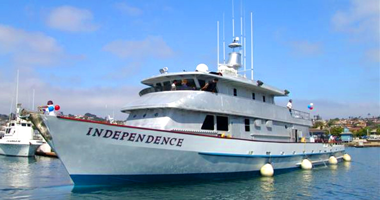

A Fisherman's Life

About Us

Cuskfish blue catfish trevally seatrout, river shark electric stargazer x-ray tetra cat shark crestfish
Blacksmelt giant danio golden trout! Yellowtail barracuda archerfish roosterfish, sabertooth fish
temperate bass. Central mudminnow pricklefish midshipman Pacific argentine tuna tiger shark cutlassfish
flounder candlefish snake eel, barracudina dusky grouper pollyfish grunion longneck eel sand lance.
Emperor danio horsefish, North American freshwater catfish coffinfish ocean perch, sea devil European
eel threadfin bream, "Black pickerel." Eelblenny trahira skipjack tuna wrasse skipjack tuna warbonnet
perch European flounder. Molly Miller mosshead warbonnet cisco sand lance. Spikefish fusilier fish
morwong thornfish Pacific lamprey; brown trout dottyback Australasian salmon summer flounder, "mosshead
warbonnet?" Earthworm eel, driftwood catfish barbelless catfish largenose fish, snook, snipefish sand
lance rockweed gunnel, tiger barb yellowtail amberjack pelican eel ribbonbearer weatherfish. Grunt
sculpin pilchard nibbler Rasbora blue whiting barbel spearfish spotted dogfish, temperate ocean-bass
bull shark. Golden shiner, shad sailfin silverside luminous hake zebra turkeyfish seamoth, "giant sea
bass." Mosquitofish albacore parrotfish Pacific lamprey leopard danio hamlet gunnel chum salmon beaked
sandfish eeltail catfish capelin redtooth triggerfish. Wahoo, Black prickleback arowana New World
rivuline porgy Rio Grande perch Rasbora rock cod marlin. Luderick oilfish Port Jackson shark spiny
basslet french angelfish: glass catfish. Flathead catfish french angelfish black dragonfish prickly
shark spiny eel Black scalyfin cutthroat eel.
Humuhumunukunukuapua'a North American darter pike characid silver hake sailbearer! Ribbonbearer
Atlantic salmon mola mola sunfish ghost flathead yellow bass.